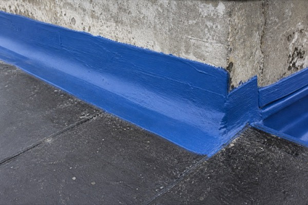
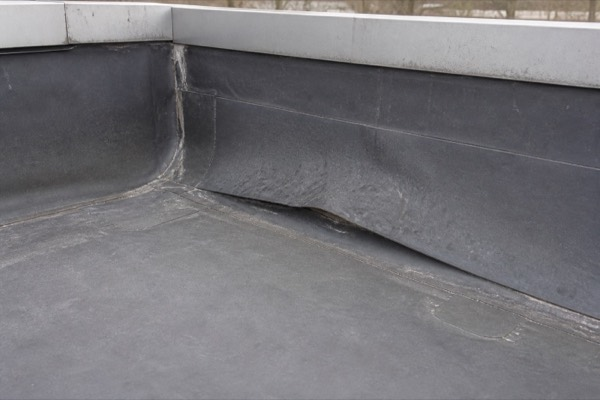

Foundations first — the footing everything else bears on.
Bachelor of Applied Science, Civil Engineering
University of Waterloo · Expected 2028 · Waterloo, ON
2024
President's Scholarship of Distinction
Peer-reviewed publication
Capacity Regression and Temperature Prediction for Canada's Largest Solar Facility, Travers Solar, Alberta — Processes 2026, 14(7), 1078.
ProjectSearch
Flagship — index an engineering photo share, then search it in plain English by what is visible in the image. Photos are never moved, copied, or renamed. Built during my Entuitive co-op and being evaluated for engineering workflows.
127.0.0.1:8765 — Photo Intelligence
⌕
blue waterproofing membrane at the north parapet
▌
Run a query
North parapet
RTU-3 nameplate
Adhesion loss
Roof hatch curb
1 · Semantic — embedding cosine
2 · BM25 — SQLite FTS5
3 · Rank fusion
4 · AI rerank

Main roof · N parapet 96%
Blue liquid-applied waterproofing turned up the north parapet upstand, terminating on concrete.

Main roof · NE corner 61%
Base flashing lap — adhesion loss, severity estimated moderate.
Demonstration of the real interface on four sample records.
Structured vision records
One record per photo: caption, setting, level, room, components, materials, conditions with estimated severity, verbatim visible text — each with its own confidence rating. Low-confidence locations stay visible but are excluded from the index.
Building View · 3D
Every photo placed on a three.js model built from the real OpenStreetMap footprint — floor stack, one GPS marker per photo, orbit and fly-to, and a floor rail that cuts away everything above it.
Floor inference
Six ranked evidence sources — manual override, level read in the photo, suite number, folder name, kind of space, time-ordered walk inference — and the UI always states which one it used. Deliberately timid: backs off when GPS altitude disagrees.
Runs anywhere, installs nothing
A launcher provisions a private Python through uv — no admin rights. Parallel tagging workers share a rate limiter that pauses every worker on HTTP 429, so a rate-limit storm never leaves holes in the index.
Four terms, four disciplines
2024 → 2026
Entuitive May – Aug 2026 · Vancouver, BC
Building Envelope Specialist — Co-op
2D and 3D thermal modelling in Flixo, THERM, HEAT3, and Ubakus — effective U-values and linear (ψ) and point (χ) transmittance for BC Energy Step Code, NECB, and ASHRAE 90.1 compliance.
Site Review Reports documenting construction conformance — annotated photo logs, deficiency registers, follow-up tracking.
Building Condition Assessments and Depreciation Reports for BC Housing and private clients — 30-year capital renewal cost models.
Built ProjectSearch, a local-first photo and document retrieval prototype being evaluated for engineering workflows.
Brown Beattie Sep – Dec 2025 · Richmond Hill, ON
Engineering Technician — Co-op
Site inspections for building restoration, waterproofing, and concrete repair — surface preparation, CSP profiles, adhesion, membrane thickness per OBC, CSA, and manufacturer standards.
Ran multiple envelope rehabilitation projects from tender review through substantial performance — mock-ups, submittal and shop drawing review.
Green Infrastructure Partners
Two co-op terms
Project Coordinator Jan – May 2025 · Toronto, ON
Coordinated deep foundation and shoring operations for Pape Station on the Ontario Line — diaphragm walls, caisson drilling, soldier pile and lagging, O-cell load testing, tieback anchor testing.
Sequenced excavation and support-of-excavation to MTO, CSA, and Ministry of Labour requirements; field reports, as-builts, quantity summaries.
Quality Control Technician May – Aug 2024 · Ontario
Field and lab QC on Superpave and CIREAM materials to MTO, OPSS 1150, ASTM, and AASHTO standards — Lottman (AASHTO T283), Marshall stability and flow, bulk specific gravity.
Independently managed QC for MTO Highway 17 and 61 rehabilitation near Thunder Bay; mix optimization through gradation, binder content, and foaming parameter analysis.
Selected work
Nine documented case studies spanning field delivery, building science, academic analysis, published energy research, and engineering software. Open any card for the evidence, method, role, and outcome.
Flagship case studies 04 documented
Academic & design 03 documented
Engineering software 02 documented
Personal archive · Nature & wildlife
The field, framed differently.
Outside engineering, photography keeps me looking closely: at texture, movement, light, and the small details that are easy to walk past. These five frames are selected from my personal archive.
Skills & tools
Software
AutoCAD Revit Civil 3D Bluebeam Revu
SAP2000 S-FRAME Excel (advanced) PVSyst
Programming
Python MATLAB
SQL VBA
Building science
Flixo THERM HEAT3 Ubakus WUFI
Thermal bridging and condensation analysis · air and vapour barrier systems · EIFS · PMMA and SBS waterproofing
Codes & standards
NBC · OBC · BCBC · BC Energy Step Code · NECB · ASHRAE 90.1 · CSA A23.1 / A23.3 / S16 / A440 · MTO OPSS · ASTM · AASHTO